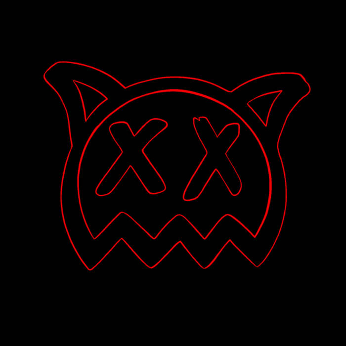

Ren Erin Gill
Money Game, Pt. 2
Lyrics

Strange times we're living in, panic and hysteria
Poor man learn the rich man don't care for ya
Narcissist mindsets spread like malaria
Sit back and watch the show, America!
Britain split through fickle shit
A government of hypocrites
These counterfeit politicians sit
In parliament, not adequate
Needlessly bleeding resources all dry
Turn a blind eye if it means a pay rise
"Oh what a shame it would be I would die"
If Number 10 Downing Street burned in a fire
Only joking, only messing, don't be stressing
I'm a peaceful adolescent, there's no need to be unpleasant
Write my thesis in a rhyme scheme
To analyze the brain
While my fingers on the trigger of a money game
Oh rain, rain, rain, rain
A storm, it comes our way
And those who rise through distorted lies
Poisoning the veins
But we like to point the blame, blame, blame, blame
It's easier to blame
But point the mirror at ourselves
We're all part of this old money game
(This old money game)
(This old)
Money is a game and the ladder we climb
Turns a saint into a sinner with his finger in crime
I'll break it down for you motherfuckers line by line
This is business economics in a nursery rhyme
She sells seashells on a seashore
But the value of these shells will fall
Due to the laws of supply and demand
No one wants to buy shells 'cause there's loads on the sand
Step 1, you must create a sense of scarcity
Shells will sell much better if the people think they're rare, you see
Bare with me, take as many shells as you can find and hide 'em on an island stockpile 'em high
until they're rarer than a diamond
Step 2, you gotta make the people think that they want 'em
Really want 'em, really fuckin want 'em
Hit 'em like Bronson
Influencers, product placement, featured prime time entertainment
If you haven't got a shell then you're just a fucking waste man
Three, it's monopoly, invest inside some property, start a corporation, make a logo, do it properly
"Shells must sell", that will be your new philosophy
Swallow all your morals they're a poor man's quality
Four, expand, expand, expand, clear forest, make land, fresh blood on hand
Five, why just shells? Why limit yourself? She sells seashells, sell oil as well!
Six, guns, sell stocks, sell diamonds, sell rocks, sell water to a fish, sell the time to a clock
Seven, press on the gas, take your foot off the brakes, Run to be the president of the United States
Eight, big smile mate, big wave that's great Now the truth is overrated, tell lies out the gate
Nine, Polarize the people, controversy is the game
It don't matter if they hate you if they all say your name
Ten, the world is yours, step out on a stage to a round of applause
You're a liar, a cheat, a devil, a whore
And you sell seashells on the seashore
rain, rain, rain, rain
A storm, it comes our way
And those who rise through distorted lies
Poisoning the veins
But we like to point the blame, blame, blame, blame It's easier to blame
But point the mirror at ourselves
We're all part of this old money game
(This old money game)
(This old)